Grafana → Traces (http://192.168.56.10:3000/d/traces) · file:
monitoring/grafana/dashboards/traces.json
(generated by scripts/generate-dashboards.py, function traces())
This document explains what each panel shows, where its data comes from, the exact query
behind it, and how to read it. All example values are real ones from this lab.
All screenshots are real renders of this dashboard (Grafana image renderer, light theme)
covering 2026-10-26 22:19–22:35 (local time, UTC+5:30), with Service = All. During that
window a scripted test session ran, so each chart shows normal traffic and two incidents:
| Time | What happened | Command |
|---|---|---|
| 22:19–22:21:30 | no traffic | |
| 22:21:30 | load test starts: 20 Locust users, about 26 req/s, all routes | .\scripts\load-test.ps1 -Users 20 -Duration 12m |
| 22:25:25–22:27:25 | +400 ms latency injected into every inventory request | .\scripts\inject-latency.ps1 -Ms 400 |
| 22:28:25–22:29:55 | 30% errors injected into inventory | .\scripts\inject-latency.ps1 -Ms 0 -ErrorRate 0.3 |
| 22:33:30 | load test ends |
Rate and percentile charts average over about a minute, so each incident appears in the
charts about 30–60 s after it starts and fades out about a minute after it ends. There is
also a short latency spike around 22:24 that was not caused by the test. Most likely
the VMs were competing for host CPU while a large container image was downloading on the
monitor VM (this laptop runs VirtualBox on top of Hyper-V, so VMs slow down under host load).
A trace is the full story of one request as it travels through the system. It consists
of spans. A span is one timed operation in one service. For example, one POST /orders
produces this trace (taken from the lab):
orders POST /orders 330 ms <- SERVER span: orders received the request
orders GET 177 ms <- CLIENT span: orders calls inventory (httpx)
inventory GET /stock/{item_id} 141 ms <- SERVER span: inventory handles it
inventory GET [db.system=redis] 7 ms <- CLIENT span: inventory calls redis
orders POST 70 ms <- CLIENT span: second call to inventory
inventory POST /stock/{item_id}/reserve 28 ms
inventory EXISTS [db.system=redis] 3 ms
inventory DECRBY [db.system=redis] 3 msEvery span records:
| Field | Meaning | Values in this lab |
|---|---|---|
| service | which service produced the span (service.name) | orders, inventory |
| span name | what was done | POST /orders, GET /stock/{item_id}, GET, EXISTS, ... |
| span kind | the role of the span | SERVER = handled an incoming request · CLIENT = made an outgoing call (HTTP to another service, or a redis command) · INTERNAL = work inside the process (here the ASGI http send / http receive steps) |
| duration | start to end time | milliseconds |
| status | outcome | ERROR or UNSET (= no error reported; this lab never sets OK) |
| attributes | extra key/values | http.status_code, db.system=redis, user.action, ... |
The OpenTelemetry instrumentation decides this. The difference between server and client
spans matters when you read the error panels:
| Span kind | Marked ERROR when | Example in this lab |
|---|---|---|
| SERVER | the service answered 5xx, or an unhandled exception occurred. A 4xx answer is the client's fault, so the server span stays UNSET. | GET /orders/flaky returning 500; POST /orders returning 502 when inventory fails. GET /orders/{order_id} → 404 is not an error. |
| CLIENT (httpx) | the called service answered 4xx or 5xx, or the connection failed | orders' GET call gets 404 for an unknown item → ERROR. Inventory stopped → ConnectError → ERROR. |
| CLIENT (redis) | the redis command raised an exception | redis stopped |
Real numbers from the last 30 minutes for orders: client span GET had 802 ERROR out of
2,223. Most of these are the 404s from Locust's "unknown item" task, plus the failures from
the stop-inventory test. Server span GET /orders/{order_id} had 0 errors although many
of its requests returned 404.
orders / inventory ──OTLP spans──▶ OTel Collector ──▶ Tempo ──┬─▶ stores the traces (72 h) ──▶ TraceQL table panels
│ + node graph (via Grafana)
└─▶ metrics-generator ──remote write──▶ Prometheus ──▶ time-series panelsThe dashboard uses two kinds of data:
| Metric family | Made by | What it counts | Labels |
|---|---|---|---|
traces_spanmetrics_calls_total | span-metrics processor | number of spans (counter) | service, span_name, span_kind, status_code, user_action |
traces_spanmetrics_latency_bucket/_sum/_count | span-metrics processor | span durations (histogram, seconds) | same + le |
traces_service_graph_request_total | service-graph processor | calls from one service to another (counter) | client, server, connection_type |
traces_service_graph_request_failed_total | service-graph processor | failed calls between them | client, server |
traces_service_graph_request_server_seconds_* / _client_seconds_* | service-graph processor | call duration seen by server / client (histogram) | client, server, le |
A real series looks like this:
traces_spanmetrics_calls_total{service="inventory", span_name="GET /stock/{item_id}",
span_kind="SPAN_KIND_SERVER", status_code="STATUS_CODE_UNSET", user_action="POST /orders"} Latency histogram buckets (le, seconds): 0.002, 0.004, 0.008, 0.016, 0.032, 0.064,
0.128, 0.256, 0.512, 1.024, 2.048, 4.096, 8.192, 16.384, +Inf.
These span metrics are separate from the phase-1 metric
http_server_duration_millisecondsused on Service Monitoring. Both measure the same
requests: one comes from the SDK in each service, the other is computed by Tempo from the
spans. Their numbers are close but not identical (different buckets and time windows).
span_name)| service | SERVER spans (incoming requests) | CLIENT spans (outgoing calls) | INTERNAL spans |
|---|---|---|---|
| orders | GET /orders, POST /orders, GET /orders/{order_id}, GET /orders/flaky | GET, POST (httpx calls to inventory) | <route> http send, <route> http receive |
| inventory | GET /stock, GET /stock/{item_id}, POST /stock/{item_id}/reserve, POST /admin/chaos | redis commands: GET, SET, MGET, EXISTS, DECRBY, SETNX, PING | <route> http send |
Names are route templates ({item_id}), not real URLs, so there is one series per
route, not one per item.
| Control | What it does |
|---|---|
| Service | Multi-select, default All. Values come from label_values(traces_spanmetrics_calls_total, service), i.e. every service that has sent spans (inventory, orders). It filters the time-series panels in rows 2–3 and the two trace tables. The service graph (row 1) is not filtered. The variable has the same name as on Service Monitoring, so the dashboard links carry your selection over. |
| Time picker | Default Last 1 hour. Every panel uses it. Rates and percentiles are computed over $__rate_interval (about 1 minute here), so the charts react about a minute after a change. |
| Refresh | Default 30 s. |
| Links (top right) | Service Monitoring, Node Exporter Full, Actions. They keep the time range and $service. |
┌──────────────── Row 1: Service graph (Tempo metrics-generator) ────────────────┐
│ [1] Service graph (node graph) │ [2] Calls between services (edges) │
│ ├────────────────────────────────────┤
│ │ [3] Failed calls between services │
├──────── Row 2: Per service: incoming requests (server spans) ──────────────────┤
│ [4] Request rate per service │ [5] Error rate % per service │ [6] p95 latency │
├──────── Row 3: Per operation (span_name, all span kinds) ──────────────────────┤
│ [7] Request rate per span_name│ [8] Error rate % per span_name│ [9] p95 latency │
├──────── Row 4: Recent traces for $service (TraceQL) ───────────────────────────┤
│ [10] Slow traces (> 300 ms) │ [11] Error traces │
└────────────────────────────────────────────────────────────────────────────────┘The whole dashboard during the test session:
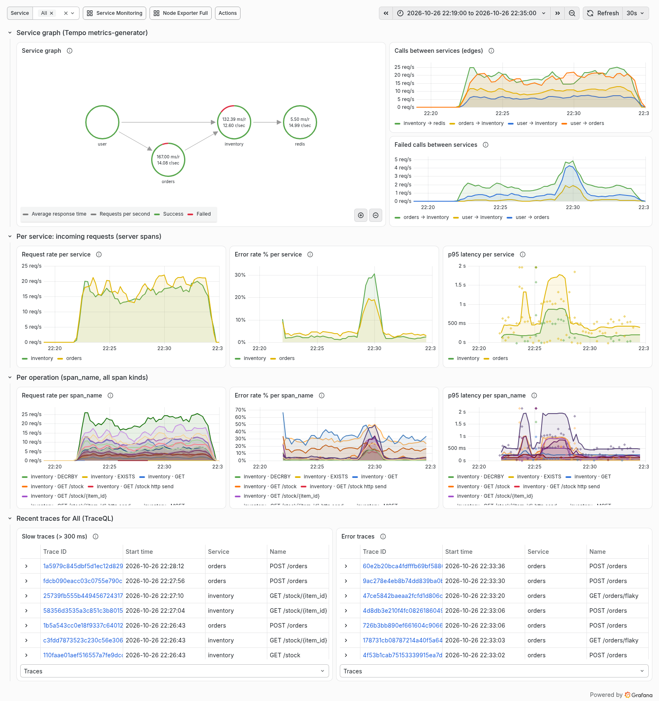
What it shows: a map of who calls whom, drawn as circles (services) and arrows (calls).
In this lab:
user ──▶ orders ──▶ inventory ──▶ redis
└──────────────────▲db.system=redis (peer_attributes in tempo.yaml). Its series has connection_type="database".Data: traces_service_graph_request_total, ..._failed_total and the
..._server_seconds histogram in Prometheus. The panel's query is the Tempo datasource's
Service Map query (queryType: serviceMap). Grafana runs the Prometheus queries itself,
using the datasource setting serviceMap → Prometheus.
How to read it:
What changes in the tests: stop inventory → the orders → inventory edge and the
inventory node turn red, and after a while the inventory → redis traffic stops. Stop redis
→ the inventory → redis edge turns red.
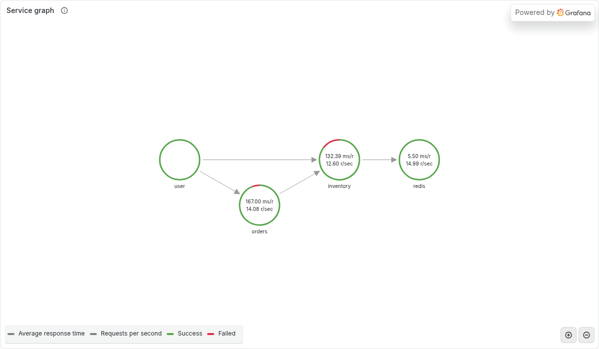
In the screenshot: the four nodes and the arrows between them. The numbers are averages
over the whole 16-minute window (including the idle start): orders 167 ms per request,
14.1 req/s; inventory 132 ms, 12.6 req/s; redis 5.5 ms, 15.0 req/s. The red arcs on
orders and inventory are their share of failed calls; most of inventory's red comes from the
30% error phase. user shows no numbers because it is not a real service. The legend at the
bottom explains the two numbers and the ring colours.
What it shows: calls per second on every arrow of the graph, as a time series. One line
per edge, e.g. orders → inventory, inventory → redis, user → orders.
Query:
sum by (client, server) (rate(traces_service_graph_request_total[$__rate_interval]))rate(...) turns the ever-growing counter into "per second"; sum by (client, server) gives
one line per edge.
How to read it: with the default load (20 users) you see roughly:
user → orders about 15–20/sorders → inventory about 2× the POST /orders rate (each order makes two calls)inventory → redis higher still (several redis commands per request)When an edge suddenly drops to 0, the caller has stopped calling, or the callee is down so
no matching server span exists.
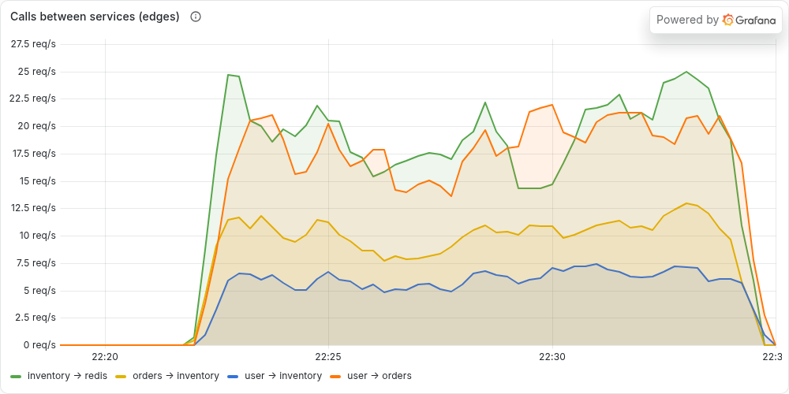
In the screenshot: traffic starts at about 22:22. user → orders (orange) and
inventory → redis (green) run at about 15–25 req/s, orders → inventory (yellow) at about
10 req/s, and user → inventory (blue) at about 5–7 req/s. All lines dip at 22:25:30–22:27:30
(the latency phase): every inventory call took 400 ms longer, so Locust's users finished
fewer requests per second. The lines return to normal afterwards and drop to 0 when the load
test ends at about 22:33:30.
What it shows: failed calls per second per edge. A call counts as failed when the client
or the server span of that call has status ERROR.
Query:
sum by (client, server) (rate(traces_service_graph_request_failed_total[$__rate_interval]))How to read it: normally small and spiky. orders → inventory carries the 404s (unknown
item) and the default 2% injected errors, and user → orders carries the flaky endpoint.
It jumps during inject-latency.ps1 -ErrorRate 0.5 (orders → inventory) and when inventory
is stopped. An empty panel ("No data") just means nothing failed in the time range.
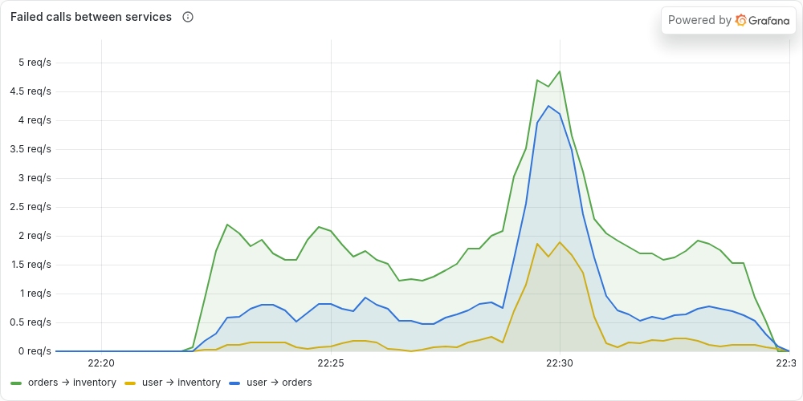
In the screenshot:
orders → inventory (green) fails at about 1.5–2 req/s even in normal operation. These are mostly the 404s for unknown items, which the client span counts as failures (section 1), plus the default 2% injected errors. user → orders (blue) is about 0.5–0.8 req/s, mainly /orders/flaky.orders → inventory rises to about 4.8 req/s, user → orders to about 4.2 req/s (orders answers 502 when inventory fails), and user → inventory (yellow) to about 1.9 req/s (the direct calls hitting the injected errors).All three panels use only SERVER spans (span_kind="SPAN_KIND_SERVER"), i.e. requests a
service received. This is the classic "RED" view (Rate, Errors, Duration) per service.
Filter: service=~"$service".
What it shows: requests per second each service handled. One line per service.
Query:
sum by (service) (rate(traces_spanmetrics_calls_total{service=~"$service", span_kind="SPAN_KIND_SERVER"}[$__rate_interval]))How to read it: orders ≈ the Locust request rate that goes through nginx. inventory =
direct Locust calls + 2 per POST /orders. It should match Service Monitoring →
Requests/sec closely (same requests, measured differently).
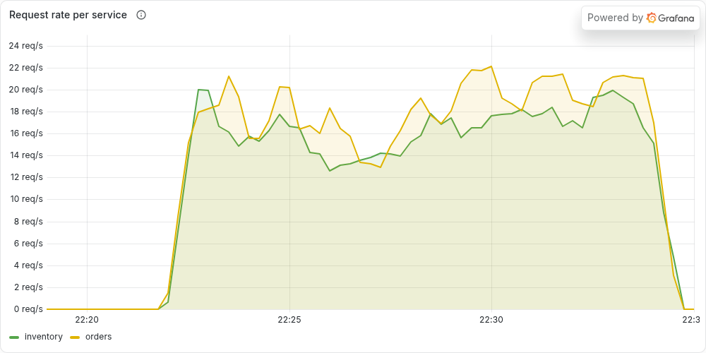
In the screenshot: both services handle about 13–22 req/s. They are close because
inventory gets about 6 req/s directly plus two calls per order. The dip at 22:25:30–22:27:30
is the latency phase (slower responses mean fewer requests from a fixed number of users).
What it shows: the percentage of received requests that ended with status ERROR (5xx or
an exception).
Query:
100 * (
sum by (service) (rate(traces_spanmetrics_calls_total{service=~"$service", span_kind="SPAN_KIND_SERVER", status_code="STATUS_CODE_ERROR"}[$__rate_interval]))
or
(0 * sum by (service) (rate(traces_spanmetrics_calls_total{service=~"$service", span_kind="SPAN_KIND_SERVER"}[$__rate_interval])))
)
/ sum by (service) (rate(traces_spanmetrics_calls_total{service=~"$service", span_kind="SPAN_KIND_SERVER"}[$__rate_interval]))or (0 * ...) part makes a service with no errors show 0% instead of disappearing from the chart. Without it there would be no error series to divide.How to read it: baseline is a few percent. orders comes from /orders/flaky (30% of
that route) and 502s; inventory comes from the default 2% injected errors. 4xx answers
(404, 409) are not included (see section 1).
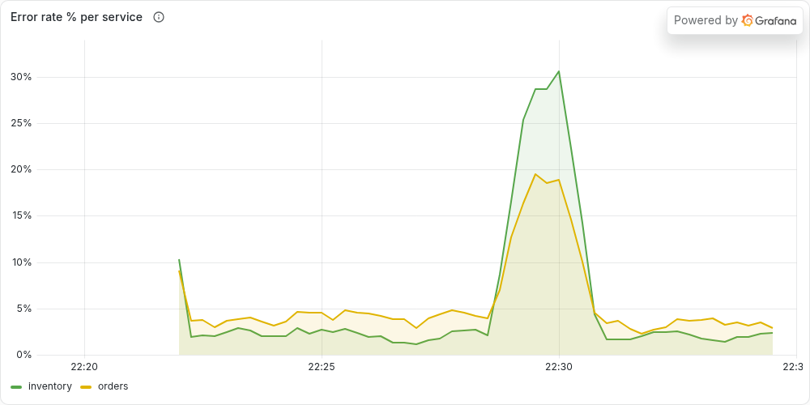
In the screenshot:
/orders/flaky is 30% of a small share of traffic).POST /orders route calls inventory; its other routes keep succeeding.What it shows: the 95th percentile response time of each service: 95% of requests were
faster than this, 5% slower.
Query:
histogram_quantile(0.95,
sum by (le, service) (rate(traces_spanmetrics_latency_bucket{service=~"$service", span_kind="SPAN_KIND_SERVER"}[$__rate_interval])))The histogram counts how many spans fell into each duration bucket (le = "less than or
equal"). histogram_quantile estimates the 95% point from those buckets. Unit: seconds
(Grafana shows ms).
How to read it:
POST /orders waits for two inventory calls) and inventory ≈ 120–160 ms.inject-latency.ps1 -Ms 500, inventory goes up by about 0.5 s and orders by about 1 s (two calls).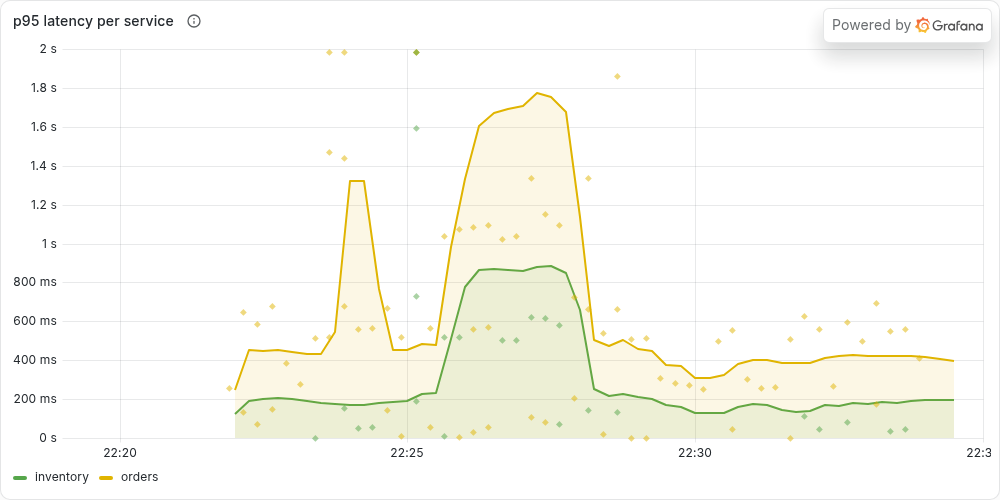
In the screenshot:
POST /orders waits for two inventory calls, each 400 ms slower.Same three measures as row 2, but split by operation (service + span_name) and
including every span kind (SERVER, CLIENT, INTERNAL). The legend is
{{service}} · {{span_name}}, e.g. inventory · DECRBY or orders · POST /orders. This is
the row for finding which step is slow or failing.
Query:
sum by (service, span_name) (rate(traces_spanmetrics_calls_total{service=~"$service"}[$__rate_interval]))How to read it:
orders · GET /orders is usually the busiest route (highest weight in the locustfile).orders · GET and orders · POST are the outgoing httpx calls to inventory.inventory · GET, EXISTS, DECRBY, MGET are redis commands. Their rates tell you how hard inventory works redis per request.... http send / http receive are internal ASGI steps (one or two per request). They are mostly noise; hide them by clicking other series in the legend.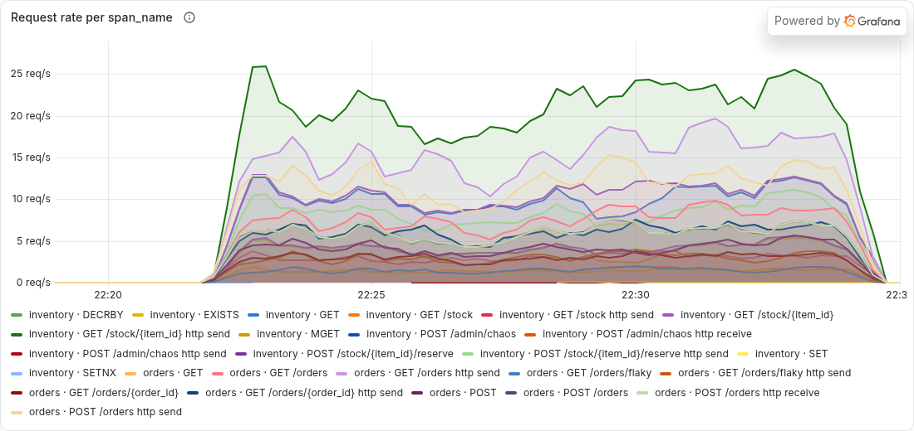
In the screenshot: about 30 lines, one per operation. The highest (dark green, about
20–25/s) is inventory · GET /stock/{item_id} http send: two internal send steps for every
GET /stock/{item_id}. The light purple line at about 15–19/s is orders · GET /orders http
send. Below them come the routes and redis commands. inventory · POST /admin/chaos appears
as a tiny line because the test script called the chaos endpoint four times. Tip: in
Grafana, click a legend entry to show only that series, or Ctrl/Cmd-click to add more.
Query: the same formula as panel [5], with by (service, span_name) and no span_kind
filter.
How to read it: this shows where errors come from:
orders · GET /orders/flaky ≈ 30%: intentional.orders · GET (CLIENT call to inventory) is high, about 30–40%. It includes every 404 for an unknown item, because client spans count 4xx as errors (section 1). This is expected here, not a bug.inventory · GET /stock/{item_id} and POST /stock/{item_id}/reserve ≈ 2% (injected), higher during -ErrorRate tests.orders · POST /orders rises when inventory fails (orders returns 502).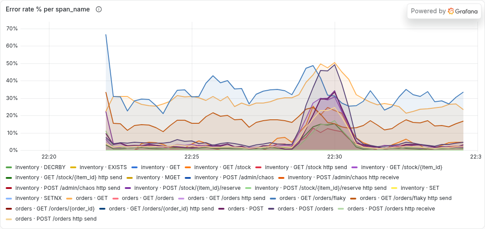
In the screenshot:
orders · GET /orders/flaky (blue, about 30%, by design) and orders · GET (light orange, about 25–30%: the outgoing call to inventory, high because of the 404s).orders · GET /orders/flaky http send (dark orange). The internal send step of a 500 response is also marked ERROR.orders · POST and orders · POST /orders (the purple ones, about 45–50%), plus inventory · GET /stock/{item_id}, inventory · POST /stock/{item_id}/reserve and GET /stock (about 15–35%).Query:
histogram_quantile(0.95,
sum by (le, service, span_name) (rate(traces_spanmetrics_latency_bucket{service=~"$service"}[$__rate_interval])))How to read it: compare a parent with its children to see where time goes:
orders · POST /orders ≈ orders · GET + orders · POST + a bit of own work.orders · GET (client) ≈ inventory · GET /stock/{item_id} (server) + network time.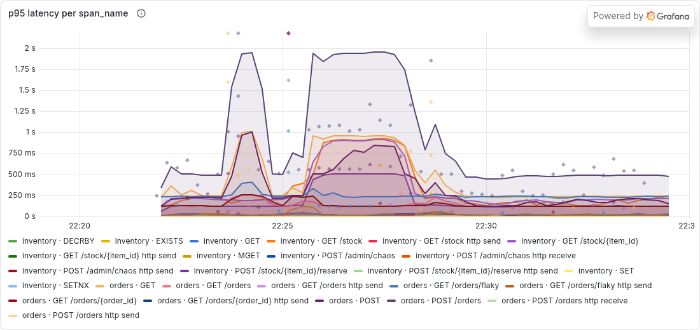
In the screenshot:
orders · POST /orders: about 500 ms normally, about 1.9 s during the latency phase.orders · GET / orders · POST calls and the inventory routes GET /stock/{item_id} and POST /stock/{item_id}/reserve.inventory · GET, EXISTS, DECRBY, ...) stay along the bottom at a few ms the whole time.This is the key reading: the extra time is inside inventory, not in redis.
These two panels query Tempo directly (not Prometheus). They return a list of real
traces from the selected time range, newest first, up to 20.
Columns:
| Column | Meaning |
|---|---|
| Trace ID | click it to open the full trace (waterfall view) |
| Start time | when the trace started |
| Service | the root service (where the trace began; normally orders, or inventory for direct calls) |
| Name | the root span name, e.g. POST /orders |
| Duration | end-to-end duration of the whole trace |
Expand a row (▸) to see the matching spans, i.e. the spans that satisfied the query.
Query (TraceQL):
{ resource.service.name =~ "${service:regex}" && traceDuration > 300ms }resource.service.name =~ ...: the trace must contain a span from a selected service (${service:regex} becomes e.g. (inventory|orders)).traceDuration > 300ms: the whole trace (first span start to last span end) took more than 300 ms.How to read it: normally mostly POST /orders traces (two inventory calls). During the
latency test almost every trace that touches inventory appears. Open one and look for the
widest bar to find the slow step.
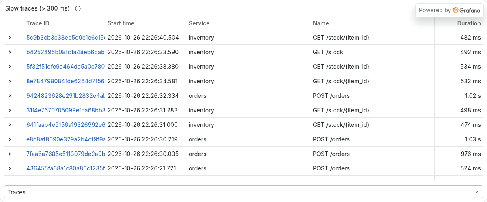
In the screenshot: traces from the latency phase (22:26:21–22:26:40). inventory routes
(GET /stock/{item_id}, GET /stock) take about 470–530 ms: normally about 100 ms, plus the
injected 400 ms. orders POST /orders traces take about 1 s (two slow inventory calls).
The Traces dropdown at the bottom switches the table between traces and matching spans.
Clicking a trace ID opens the waterfall. Here is one of these slow traces (079164e4…,
1.11 s):
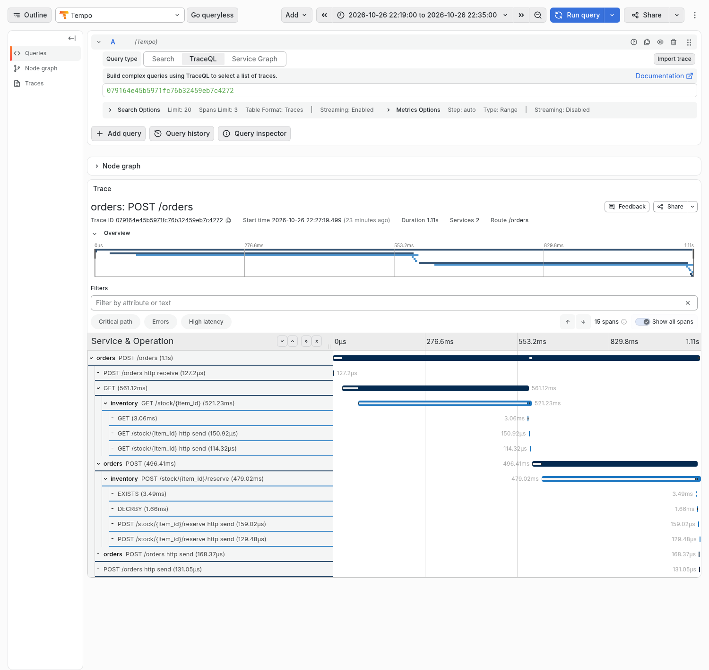
How to read the waterfall: each row is a span, indented under its parent, and the bar shows
when it started and how long it took.
orders POST /orders takes the full 1.11 s.GET call to inventory takes 561 ms, and inside it inventory's GET /stock/{item_id} takes 521 ms, but its redis GET takes only 3 ms.POST (496 ms) → POST /stock/{item_id}/reserve (479 ms) → EXISTS 3.5 ms and DECRBY 1.7 ms.So the time is lost inside inventory's own code, which is where the latency was injected.
The Critical path and High latency buttons above the table highlight this automatically.
Query (TraceQL):
{ resource.service.name =~ "${service:regex}" && status = error }A trace matches when a span of a selected service has status ERROR (the condition is
evaluated per span).
How to read it: you see GET /orders/flaky traces, POST /orders traces with a 502,
and orders traces whose GET client call got a 404. Open a trace and click the red span →
Events → exception to read the reason, e.g.
RuntimeError: injected failure (chaos error_rate=0.5) (inventory, error injection)httpx.ConnectError: All connection attempts failed (orders, inventory stopped)RuntimeError: random failure (flaky endpoint) (orders /orders/flaky)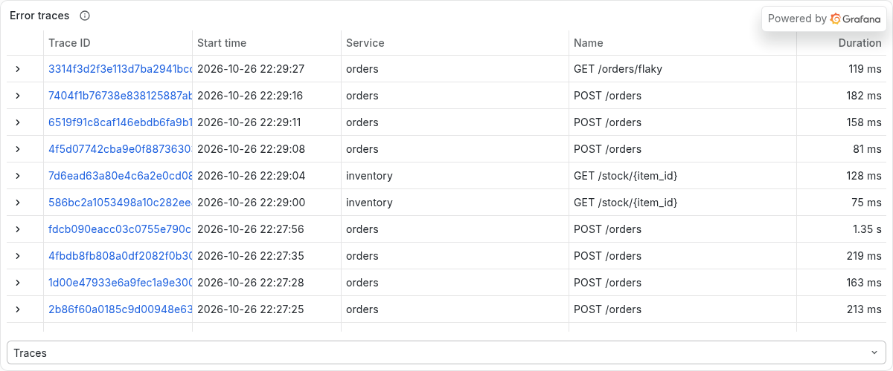
In the screenshot:
POST /orders traces that failed because inventory failed, two direct inventory GET /stock/{item_id} calls that hit the injected error, and a GET /orders/flaky.POST /orders traces from before the error phase. These are typically orders whose inventory call returned 404 (unknown item) or hit the default 2% error rate. One of them (1.35 s) is from the end of the latency phase.One of the error-phase traces opened (17e4f511…, 198 ms):
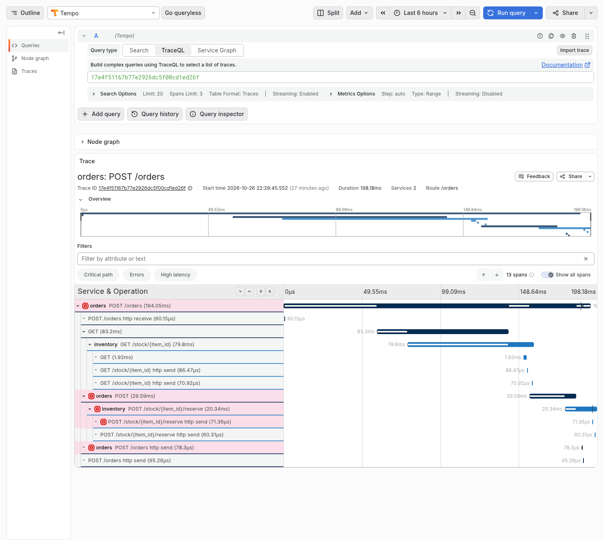
How to read it: spans with status ERROR are marked with a red icon and a pink background.
The chain of red runs from orders POST /orders → orders POST (the call to inventory) →
inventory POST /stock/{item_id}/reserve, so the failure started in inventory and travelled
up to orders. Note that the failed reserve span has no redis children (no EXISTS /
DECRBY): the injected failure fires before inventory touches redis. The first call
(GET /stock/{item_id} with its redis GET) succeeded. Clicking the red inventory span and
opening Events shows exception: RuntimeError: injected failure (chaos error_rate=0.3).
The red http send step is the internal ASGI step that sent the 500 response. The Errors
button above the table jumps between the red spans.
| Question | Panel |
|---|---|
| Which services talk to each other? | [1] Service graph |
| Is traffic between two services normal? | [2] Calls between services |
| Which connection is failing? | [3] Failed calls, [1] red edges |
| How busy / how broken / how slow is each service? | [4] / [5] / [6] |
| Which route or redis command causes it? | [7] / [8] / [9] |
| Show me an example of a slow request | [10], or an exemplar diamond in [6] or [9] |
| Show me an example of a failing request and why | [11] → red span → Events |
/health is excluded from tracing, so health checks never show up here.rate() handles counter resets, but you may see a short gap..\scripts\load-test.ps1 -Duration 2m, wait 30 s, and check the time range. .\scripts\verify.ps1 -Dashboards traces tests every panel of this dashboard.